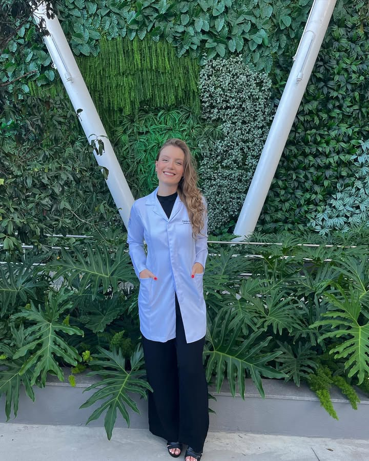

Histórias de Aprovação
Conheça estudantes que conquistaram suas vagas em residência médica com nossa metodologia.
A metodologia revolucionou minha forma de estudar
Com as revisões espaçadas e os flashcards personalizados, consegui otimizar meu tempo e aumentar minha retenção.
Conciliei faculdade e preparação de forma muito mais eficiente
O sistema de revisão espaçada me ajudou a manter o conhecimento sempre fresco na memória.
A mentoria foi essencial para meu crescimento na residência
As revisões espaçadas me permitiram estar sempre com a memória ativa e relembrar conceitos fundamentais dentro da rotina corrida do meu R3.
Passei em Dermatologia na USP no primeiro ano tentando!
O sistema de flashcards e revisão espaçada me permitiu absorver uma quantidade enorme de conteúdo de forma organizada.
Após duas tentativas frustradas, finalmente conquistei minha vaga
Consegui estruturar meus estudos e conquistei minha vaga em Pediatria na Unifesp!

Em 8 meses passei em Cirurgia Geral trabalhando e estudando
A metodologia de revisão espaçada otimizou meu tempo de estudo drasticamente.
Quer ser nosso próximo caso de sucesso?
Comece a estudar com metodologia científica baseada em Active Recall e Spaced Repetition.